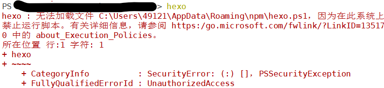
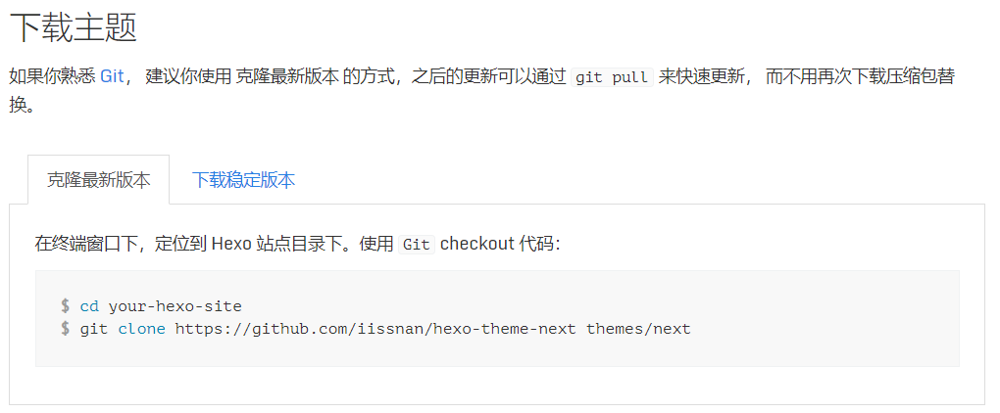
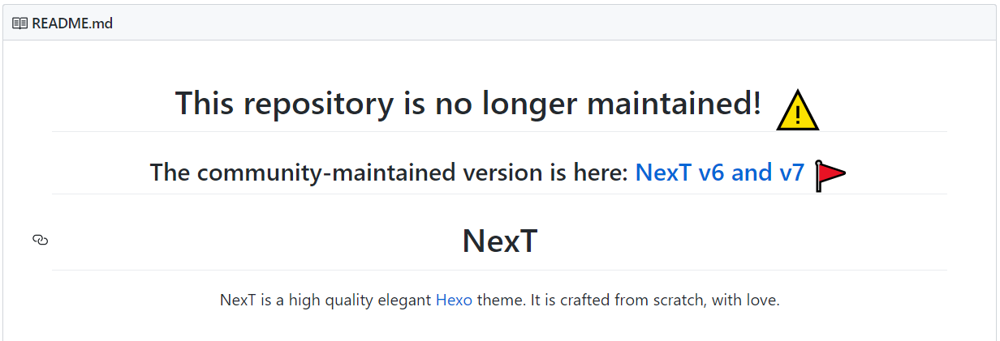
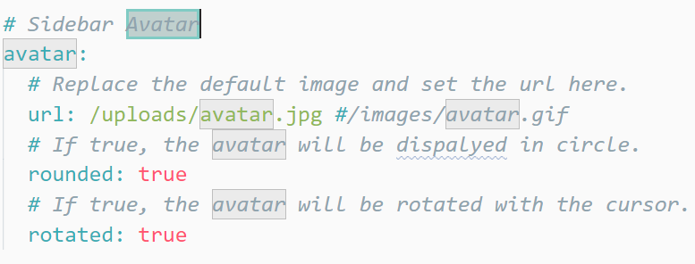
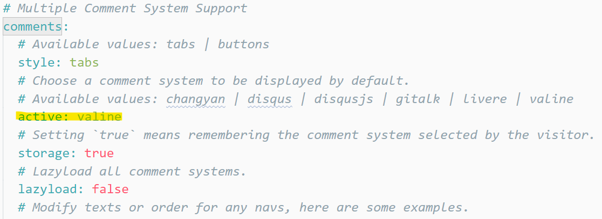
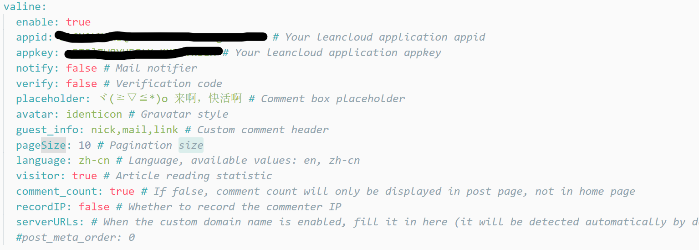
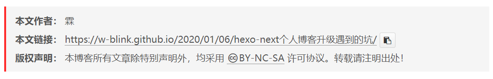

写在前面的
你们可爱的博主大人又回来继续更新博客了，中间才3个月没有更新，在正常不过了，毕竟我可是要成为年更区、与作者比命长分舵的一只鸽子（大误）。好了，言归正传，本次带来的是我的个人博客的更新以及遇到的各种坑，为了防止我以后再次踩坑（虽然这是必定的），所以特此留念。
更新内容
为了让没有经历过本博客黑暗时代的童鞋们对本站有所了解，所以这里将更新或添加的内容列举一下下。
- Hexo版本更新为最新版
- NexT主题更新为最新版
- 添加头像旋转
- 添加Valine评论
- 将自定义
（抄袭）的版权信息修改为官方的版权信息 - 为官方的版权信息添加地址复制按钮
- 换用靠谱的阅读人数统计
- 踩坑&填坑😭
好吧，这和从头捣鼓一遍好像差不多。。。
Hexo版本更新为最新版
万恶之源就是这一步，如果不是我想更新Hexo，后面也不会由这么多事，更新很简单,直接到Hexo官网找最新版安装教程即可。nodejs安装命令如下：
1 | npm install hexo-cli -g |
然后坑就来了，Windows10下无法配置Hexo的环境变量，直接敲Hexo会显示如下错误：

神奇Windows禁止运行脚本，网上有解除这个限制的方法，但我懒得弄了，所以每次使用Hexo需要先敲npx，用npx来调用Hexo。Linux和Mac似乎没有这个坑。。。
NexT主题更新为最新版
Hexo升级了，主题当然也要升级，我用的NexT，所以区官网找安装方法，如下图：

然后，你会发现NexT依旧是6.0.0版本，为什么呢？去这个github仓库看看就知道了，如下图：

对，NexT仓库搬迁了，然而中文官网的地址并没有更新，我之前配了半小时的内容又作废了。。。
最新版的安装命令如下（在Hexo的目录下运行）：
1 | git clone https://github.com/theme-next/hexo-theme-next themes/next |
添加头像旋转
最新版NexT已经支持头像旋转了，直接在主题配置文件中搜索avatar即可找到头像设置

当然老版那种自立门户的方法也是可以的，百度一搜都是，这里不粘贴了
添加Valine评论
最新版NexT评论的添加方法也有所不同，需要先在主题配置文件中搜索comments，在active里填上valine，如下图：

然后再搜索valine把LeanCloud上的app_id和app_key填上，enable设为true，剩下的就是设置了，我的设置如下：

注意：LeanCloud上的安全域名记得填上自己的博客地址，不然评论只有localhost发的能记到LeadCloud上。。。别问我是怎么知道的
将自定义（抄袭）的版权信息修改为官方的版权信息
以前的版权信息是从一位大佬那抄借来的，但最新版NexT自带了版权信息，所以现在又改成NexT的版权信息了，毕竟东西不要借（chao)太(tai)久(duo)，现在的版权信息如下：

这个设置简单，直接在主题配置文件中搜索creative_commons自己调。
你问我那个复制按钮哪来的，当然是抄借鉴官方的源代码自己添的了。
为官方的版权信息添加地址复制按钮
嘿嘿，读书人程序员的事，怎么能叫抄呢，应该叫借鉴~~借鉴~~
NexT官方支持代码复制按钮了，所以为了风格统一，需要给我的Copyright也加上复制按钮，这个配置比较麻烦，步骤如下：
第一步 新建按钮样式
先在themes\next\source\css下新建_custom文件夹，然后在文件夹里新建custom.styl文件，这个文件里的内容如下：
1 | .copy-link-btn { |
官方CSS里借鉴的~~，当然如果你要自定义主题颜色什么的可以在这个文件里自己加
第二步 导入这个文件
在themes\next\source\css\main.styl文件（_custom文件夹那层）最后添加这几行代码让custom.styl导入：
1 | // Add Custom Layer |
喜欢自己起名的宝宝们注意这里的路径要写对哟
第三步 编辑JS
先在themes\next\source\js下新建custom.js文件，内容如下：
1 | (function () { |
官方JS里借鉴的~~
注意这里插入按钮的CSS样式名字要与之前custom.styl里的CSS样式名字统一
第四步 导入JS
我选择的导入方式比较麻烦，不过我喜欢~
在themes\next\layout下新建custom-scripts.swig文件，内容如下
1 | <script type="text/javascript" src="/js/custom.js"></script> |
然后再在themes\next\layout_layout.swig的最后body和html结束标记之前添加代码如下：
1 | <!--Add--> |
最后在主题配置文件最后追加代码
1 | # Add |
弄完收工。
具体代码功能就是将运行custom-scripts.swig给控制接口暴露出来，然后设置为true，使custom-scripts.swig运行，而custom-scripts.swig的功能就是将custom.js添加到html的body里。
这样配置的好处是可以自己编辑CSS和Javascript然后导入，可玩性更高，不过要自己注意避免冲突哟~
换用靠谱的阅读人数统计
这个简单，使用Valine自带的人数统计，然后没了。。。